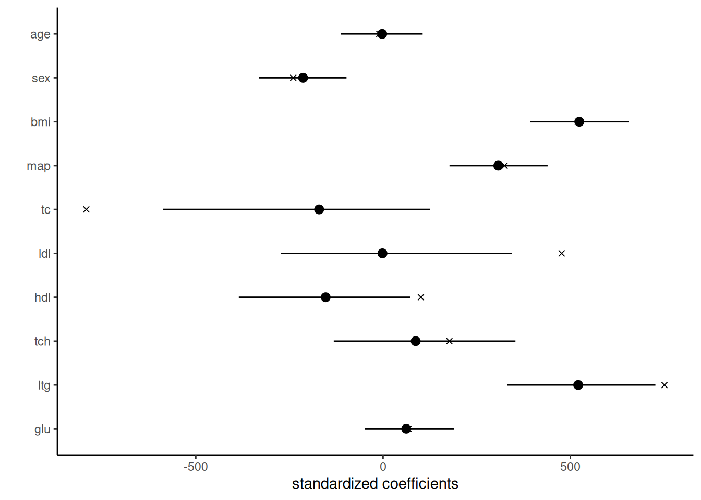

The Pareto distribution with shape \(\alpha>0\) and scale \(\tau>0\) has density \[
f(x; \alpha, \tau) = \alpha x^{-\alpha-1}\tau^\alpha \mathrm{I}(x > \tau).
\] It can be used to model power laws in insurance and finance, or in demography. The uscitypopn data set in the hecbayes package contains the population size of cities above 200K inhabitants in the United States, from the 2020 census.
Using improper priors \(p(\alpha, \tau) \propto 1,\) write the joint posterior for a simple random sample of size \(n\) and derive the conditional distributions \(p(\alpha \mid \boldsymbol{y}, \tau)\) and \(p(\tau \mid \alpha, \boldsymbol{y})\).
The mononomial distribution \(\mathsf{Mono}(a,b)\) has density \(p(x) \propto x^{a-1}\mathrm{I}(0 \leq x \leq b)\). Find the normalizing constant for the distribution and obtain the quantile function to derive a sampler.
Implement Gibbs sampling for this problem for the uscitypopn data. Draw enough observations to obtain an effective sample size of at least 1000 observations. Calculate the accuracy of your estimates?
Solution. With improper prior, the joint posterior is the product of the likelihood contributions so \[
p(\alpha, \tau \mid \boldsymbol{y}) \propto \alpha^n \left(\prod_{i=1}^n y_i\right)^{-\alpha-1} \tau^{n\alpha} \mathrm{I}(\min_i y_i > \tau).
\] Using the hint, write the conditional density for \(\alpha\) given the rest as \[\begin{align*}
p(\alpha \mid \boldsymbol{y}, \tau) \propto \alpha^n \left( \frac{\prod_{i=1}^n y_i}{\tau^n}\right)^{-\alpha} = \alpha^{(n+1)-1} \exp\left\{-\alpha \left(\sum_{i=1}^n\log y_i - n\log \tau\right) \right\}
\end{align*}\] which is \(\mathsf{Gamma}\big(n+1, \sum_{i=1}^n \log y_i - n \log \tau \big)\). For the second, we have \[\begin{align*}
p(\tau \mid \alpha, \boldsymbol{y}) \propto \tau^{n\alpha} \mathrm{I}(\min_{i} y_i > \tau),
\end{align*}\] a mononomial distribution with parameters \(a=n\alpha+1\) and \(b = \min_{i} y_i\).
To find the normalizing constant of the mononomial distribution, we simply integrate the unnormalized density to obtain the reciprocal constant: if \(c = \int g(x) \mathrm{d} x\) for \(c < \infty\) and \(g(x) \geq 0\) for all \(x\), then \(g(x)/c\) integrates to one and is a valid density. Thus, we find \[c= \int_0^b x^{a-1}\mathrm{d} x = \left[\frac{x^{a}}{a}\right]_{0}^b= \frac{b^{a}}{a}.\] The distribution function is \(G(x) = (x/b)^{a}\) for \(x \in [0,b]\) and the quantile function \(G^{-1}(u) = u^{1/a}b\).
qmono <-function(u, a, b, log =FALSE){stopifnot(isTRUE(all(a >0, b >0, u >=0, u <=1))) logq <-log(u)/(a+1) +log(b)if(log){ return(logq)} else { return(exp(logq)) }}# Load datadata("uscitypopn", package ="hecbayes")y <- uscitypopn$populationn <-length(y)# Summary statistics appearing in the posterior distributionsumlogy <-sum(log(y))miny <-min(y)# MCMC via Gibbs samplingB <-1e4Lchains <-matrix(0, nrow = B, ncol =2)colnames(chains) <-c("alpha", "tau")curr <-c(2, 2e5)for(b inseq_len(B)){ chains[b,1] <- curr[1] <-rgamma(n =1, shape = n+1, rate = sumlogy - n*log(curr[2])) chains[b,2] <- curr[2] <-qmono(runif(1), a = n*curr[1]+1, b = miny)}chains <- coda::as.mcmc(chains)# Compute effective sample sizecoda::effectiveSize(chains)
alpha tau
9718.142 10000.000
summary(chains)
Iterations = 1:10000
Thinning interval = 1
Number of chains = 1
Sample size per chain = 10000
1. Empirical mean and standard deviation for each variable,
plus standard error of the mean:
Mean SD Naive SE Time-series SE
alpha 1.391e+00 0.1306 0.001306 0.001324
tau 1.991e+05 1247.1410 12.471410 12.471410
2. Quantiles for each variable:
2.5% 25% 50% 75% 97.5%
alpha 1.143e+00 1.303e+00 1.385e+00 1.476e+00 1.657e+00
tau 1.958e+05 1.987e+05 1.995e+05 2.000e+05 2.004e+05
We can see that the autocorrelation is minimal, so the sampler is quite efficient.
Exercise 5.2
Implement the Bayesian LASSO for the diabetes cancer surgery from package lars. Check Park & Casella (2008) for the details of the Gibbs sampling (p. 682, right column).
Fit the model for a range of values of \(\lambda\) and produce parameter estimate paths to replicate Figure 2 of the paper.
Check the effective sample size and comment on the mixing. Is it impacted by the tuning parameter?
Implement the method of section 3.1 from Park & Casella (2008) by adding \(\lambda\) as a parameter.
For three models with different values of \(\lambda\), compute the widely applicable information criterion (WAIC) and use it to assess predictive performance.
Solution. We first setup a Gibbs sampler for a given value of \(\lambda\), or using the empirical Bayes estimator provided in section 3.1. The effective sampling size for fixed \(\lambda\) is good. If we let the parameter varies, the performance degrades and we obtain an effective size shy of 1000 for 10K iterations for \(\lambda\), and comfortably above 5000 for others.
data(diabetes, package ="lars")bayeslasso <-function(lambda =NULL, B =1e4L,x = diabetes$x, y = diabetes$y){stopifnot(is.matrix(x), is.vector(y))# Scale inputs in case x <-scale(x, center =TRUE, scale =FALSE) y <- y -mean(y)# Check methodif(is.null(lambda)){ method <-"empbayes" } else{ method <-"fixed" } burnin <-250L# Precompute quantities and dimensions xtx <-crossprod(x) p <-ncol(x) n <-nrow(x)# Obtain initial estimates linmod <-lm(y ~ x -1) betaols <-coef(linmod) beta.curr <- betaols sigmasq.curr <-mean(residuals(linmod)^2) tausqinv.curr <-rep(1, p)# Value reported in the text for the optimal parameter: lambda = 0.237 beta.ind <-1:p sigmasq.ind <- p +1L tausq.ind <-seq(from = p +2L, length.out = p, by =1L) chains <-matrix(0, nrow = B, ncol = p +1+ p +ifelse(method =="fixed", 0,1))if(method =="fixed"){colnames(chains) <-c(paste0("beta", 1:p), "sigmasq",paste0("tausq", 1:p)) lambdasq.curr <- lambda[1]^2 } else{colnames(chains) <-c(paste0("beta", 1:p), "sigmasq", paste0("tausq", 1:p), "lambda") lambdasq.curr <- p*sqrt(sigmasq.curr)/sum(abs(betaols)) lambdasq.ind <-ncol(chains) }# MCMC loopfor(b inseq_len(B + burnin)){ ind <-pmax(1, b-burnin) Ainv <-solve(xtx +diag(tausqinv.curr)) beta.curr <- chains[ind,beta.ind] <-as.numeric( mvtnorm::rmvnorm(n =1, mean =as.numeric(Ainv %*%t(x) %*% y), sigma = sigmasq.curr*Ainv)) sigmasq.curr <- chains[ind, sigmasq.ind] <-1/rgamma(n =1, shape = (n-1+p)/2,rate =sum((y-x %*% beta.curr)^2)/2+sum(beta.curr^2*tausqinv.curr)/2)# Compute marginal posterior mean for lambda, using section 3.1 sumexpect <-0for(j in1:p){ tausqinv.curr[j] <- actuar::rinvgauss(n =1, mean =sqrt(lambdasq.curr*sigmasq.curr)/abs(beta.curr[j]),dispersion =1/lambdasq.curr)if(method !="fixed"){ sumexpect <- sumexpect +mean(1/actuar::rinvgauss(n =1000, mean =sqrt(lambdasq.curr*sigmasq.curr)/abs(beta.curr[j]),dispersion =1/lambdasq.curr)) } } chains[ind, tausq.ind] <-1/tausqinv.currif(method !="fixed"){ lambdasq.curr <- chains[ind, lambdasq.ind] <-2*p/sumexpect }}if(method !="fixed"){ chains[, lambdasq.ind] <-sqrt(chains[, lambdasq.ind])}# Cast Markov chains to mcmc class object.chains.mcmc <- coda::as.mcmc(chains)# Effective sample sizeess <-as.integer(round(coda::effectiveSize(chains.mcmc), 0))# Compute WAIC from log pointwise densitylppd <-0penalty <-0for(i inseq_len(n)){ lppd_i <-dnorm(x = y[i], mean =as.numeric(chains[,beta.ind] %*%c(x[i,])), sd =sqrt(chains[,sigmasq.ind]), log =TRUE) lppd <- lppd +mean(lppd_i) penalty <- penalty +var(lppd_i)}waic <- (-lppd + penalty)/nl1norm <-mean(rowSums(abs(chains[,beta.ind])))# Parameter estimates and 95% equitailed credible intervalsquant <-t(apply(chains, 2, quantile, prob =c(0.025, 0.5, 0.975)))regpar <-as.data.frame(cbind(quant,colMeans(chains), coda::batchSE(chains.mcmc), ess))regpar$pars <-rownames(quant)rownames(regpar) <-NULLcolnames(regpar) <-c("lower", "median", "upper", "mean", "se", "ess", "par")regpar <- regpar[,c(7,4:5,1:3,6)]attr(regpar, "waic") <- waicattr(regpar, "l1norm") <- l1normreturn(regpar)}# Call the MCMC samplerset.seed(2023)lasso_empbayes <-bayeslasso(lambda =NULL)# Extract the value of WAICwaic <-attr(lasso_empbayes, "waic")

Figure 1: Standardized median posterior estimates of the coefficients for the Bayesian LASSO with 95 percent equitailed credible intervals, with \(\lambda\) estimated using empirical Bayes. Ordinary least square estimates are denoted by crosses.
The plot corresponds to Figure 2 of Park & Casella (2008) and the posterior summaries, reported in Table 1, are also in line with those of the paper.
Table 1: Estimates posterior summaries from the Bayesian LASSO, based on 10K draws. Posterior means and adjusted standard errors, posterior median and equitailed 95 percent credible intervals, effective sample.
par
mean
se
lower
median
upper
ess
beta1
-3.14
0.58
-112.92
-2.34
105.68
10000
beta2
-214.04
0.58
-331.89
-213.49
-97.58
9012
beta3
523.41
0.76
393.47
523.87
656.33
9062
beta4
307.64
0.72
177.38
307.69
439.33
8957
beta5
-187.12
2.60
-587.60
-170.71
125.58
5089
beta6
7.79
1.92
-272.14
-1.62
344.59
6056
beta7
-154.43
1.62
-385.12
-153.23
72.40
5259
beta8
96.44
1.60
-131.62
87.10
353.40
6460
beta9
524.09
1.26
331.93
520.90
727.05
6630
beta10
64.21
0.69
-49.05
61.87
188.78
8897
sigmasq
2952.78
2.00
2585.93
2945.02
3370.20
9511
tausq1
20.55
0.26
0.24
11.13
93.70
10000
tausq2
34.75
0.33
3.42
25.19
122.06
8868
tausq3
58.44
0.36
13.42
49.09
155.41
9375
tausq4
41.99
0.39
6.09
32.35
133.19
8972
tausq5
34.17
0.45
1.03
24.45
122.56
5159
tausq6
26.82
0.38
0.57
17.18
105.39
7441
tausq7
31.06
0.35
1.04
21.46
118.21
8954
tausq8
27.47
0.33
0.56
17.94
107.05
8551
tausq9
59.02
0.47
12.95
49.73
160.42
7805
tausq10
23.35
0.30
0.40
13.66
102.21
9703
lambda
0.24
0.00
0.21
0.24
0.26
1038
For the last part, we can simply run the MCMC and find the value of \(\lambda\) that yields the lowest value of WAIC.